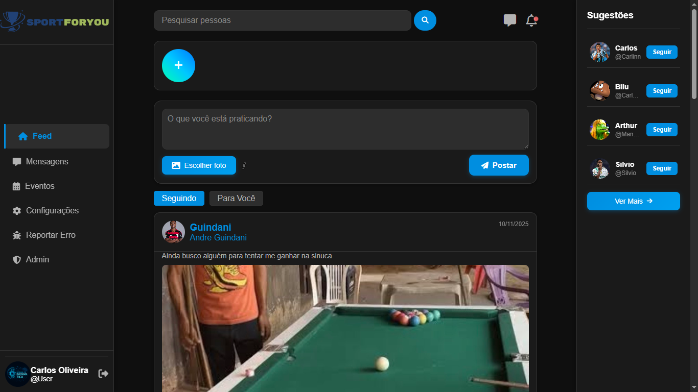

SportForYou

Sobre o Projeto
O SportForYou é uma rede social completa desenvolvida especialmente para amantes de esportes. Este projeto foi desenvolvido como trabalho final de Programação e DPI (Desenvolvimento de Projetos de Informática), demonstrando habilidades em desenvolvimento web full stack.
A plataforma permite que usuários se conectem, compartilhem conteúdos esportivos, interajam com outros usuários e acompanhem notícias e eventos relacionados ao mundo dos esportes. O projeto integra tecnologias modernas para criar uma experiência completa e interativa.
Objetivos
- Criar uma rede social focada em esportes
- Demonstrar conhecimentos em desenvolvimento web full stack
- Implementar sistema de autenticação e gerenciamento de usuários
- Criar interface interativa e responsiva
- Integrar banco de dados para armazenamento de informações
- Desenvolver funcionalidades de rede social (posts, interações, perfil)
- Atender requisitos do trabalho final de Programação e DPI
Tecnologias
Como foi feito
MySQL: Banco de dados relacional para armazenar informações de usuários, posts, comentários e interações de forma estruturada e confiável.
PHP: Linguagem backend para desenvolver a lógica do servidor, gerenciar autenticação, processar requisições e realizar operações no banco de dados.
HTML5 + CSS3: Estrutura semântica e estilos modernos com layouts responsivos, animações e design visual consistente.
JavaScript: Interatividade no cliente, atualização dinâmica de conteúdo, validação de formulários e manipulação do DOM.